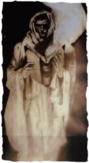
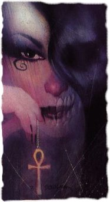
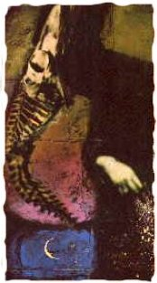
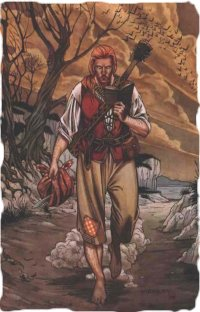
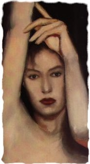
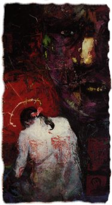
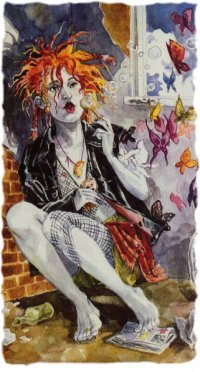

This Gallery contains information about the Endless. Remember though, that we perceive but aspects of the Endless, as we see the light glinting from one tiny facet of some huge and flawlessly cut precious stone.
|  |
DestinyDestiny is the oldest of the Endless; in the Beginning was the Word, and it was traced by his hand on the first page of his book, before ever it was spoken aloud. Destiny is also the tallest of the Endless, to mortal eyes. There are some who believe him to be blind; whilst others, perhaps with more reason, claim that he has travelled far beyond blindness, that indeed, he can do nothing but see: that he sees the fine traceries the galaxies make as they spiral through the void, that he watches the intricate patterns living things make on their journey through time. |
DeathDeath accompanies each mortal twice in life. At birth, she speaks to them, but since no one remembers what she says, it is not known why. When they die, she guides them to what lies beyond their mortal years. Mortals fear Death. They fear the sunless lands to which she guides them. They feebly attempt to placate her. They do not love her. Once though, a long time ago, a dreamer celebrated her gift in a song, and came closer to a true description of Death than any mortal since:
One day in every century, Death takes on mortal flesh, to better comprehend what the lives she takes must feel like, to taste the bitter tang of mortality: this is the price she must pay for being the divider of the living from all that has gone before and all that must come after. |
 |
|  |
DreamIt is hard to say anything at this time about Dream. The previous Dream was a cold follower of rules, a collector of names, a breaker of his own heart. He was also a prince of stories, a friend to few, and an enemy to some. This is neither the place nor the time though, to tell his story. The current Dream seems more compassionate than his predecessor, more caring, more concerned. But it is too early to tell anything about his reign over what is not, except perhaps this: The king is dead, long live the king. |
DestructionApproximately 300 years ago, Destruction abandoned his realm. His sigil has been taken down, and he can no longer be reached. He is not dead, for if that was so, another aspect of Destruction would have taken his place. He simply choose not to be responsible for destruction and all other facets of his domain anymore. There is still destruction and change, it is just no longer controlled. Destruction can no longer be reached, but should you ever you meet a tall, red-haired man, carrying a knapsack, you might want to offer him some bread and cheese. He tells good stories. |
 |
|  |
DesireIt is unlikely that any portrait will ever do Desire justice, since to see her (or him) is to love him (or her), passionately, painfully, and to the exclusion of all else. Desire smiles in brief flashes, like sunlight glinting from a knife-edge. And there is much else that is knife-like about Desire. Never a possession, always the possessor, with skin as pale as smoke, and eyes tawny and sharp as yellow wine: Desire is everything you have ever wanted. Whoever you are. Whatever you are. Everything. |
DespairDespair, Desire's sister and twin, is queen of her own bleak bourne. It is said that scattered through Despair's domain are a multitude of tiny windows, hanging in the void. Each window looks out on a different scene, being, in our world, a mirror. Sometimes you will look into a mirror and feel the eyes of Despair upon you, feel her hook catch and snag upon your heart. Her skin is cold, and clammy; her eyes are the colour of sky, on the grey, wet days that leach the world of colour and meaning; her voice is little more than a whisper, and while she has no odour, her shadow smells musky and pungent, lik the skin of a snake. Despair says little, and is patient. |
 |
|  |
DeliriumDelirium is the youngest of the Endless. She smells of sweat, sour wines, late nights, and leather. Her realm is close, and can be visited; however, human minds were not made to comprehend her domain, and those few who have made the journey have been incapable of reporting more than the tiniest fragments. The poet Coleridge claimed to have known her intimately, but the man was an inveterate liar, and in this, as in so much, we must doubt his word. Her appearance is the most variable of all the Endless, who, at best, are ideas cloaked in the semblance of flesh. She has a tendency to turn into butterflies or goldfish every now and then. Delirium was once Delight, but that was long ago even as the Endless reckon, and only Delirium herself knows why she changed. Through her mismatched eyes, one green and one blue, she sees the world in her own unique way. |